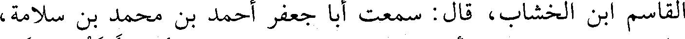
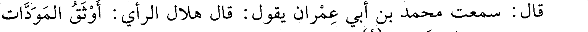
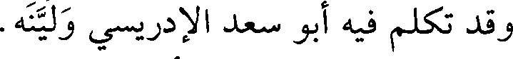
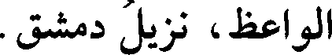

File: 000632.gt.txt (if the image is defective, simply delete all Arabic text and the line will be excluded)

كتب الكثير بأصبهان والري، وحدث عن عبدالله بن محمد بن وهب
File: 000633.gt.txt (if the image is defective, simply delete all Arabic text and the line will be excluded)

الدينوري، ومحمد بن إبراهيم بن زياد، وجماعة. وعنه أبو بكر بن أبي
File: 000634.gt.txt (if the image is defective, simply delete all Arabic text and the line will be excluded)

علي، وأبو نعيم الحافظ(2).
File: 000635.gt.txt (if the image is defective, simply delete all Arabic text and the line will be excluded)

96 - أحمد بن القاسم بن عبيدالله(3) بن مهدي، أبو الفرج ابن
File: 000636.gt.txt (if the image is defective, simply delete all Arabic text and the line will be excluded)

الخشاب البغدادي الحافظ، نزيل ثغر طرسوس.
File: 000637.gt.txt (if the image is defective, simply delete all Arabic text and the line will be excluded)

حدث بدمشق عن محمد بن محمد الباغندي، ومحمد بن جرير،
File: 000638.gt.txt (if the image is defective, simply delete all Arabic text and the line will be excluded)

وعبدالله بن إسحاق المدائني، والبغوي، ومحمد بن الربيع الجيزي، وأبي
File: 000639.gt.txt (if the image is defective, simply delete all Arabic text and the line will be excluded)

جعفر الطحاوي، وجماعة. وعنه تمام، وعبدالوهاب الميداني، وبقاء
File: 000640.gt.txt (if the image is defective, simply delete all Arabic text and the line will be excluded)

الخولاني، ومحمد بن عوف المزني، ومكي بن الغمر.
File: 000641.gt.txt (if the image is defective, simply delete all Arabic text and the line will be excluded)

وتوفي في صفر سنة أربع.
File: 000642.gt.txt (if the image is defective, simply delete all Arabic text and the line will be excluded)

قال ابن النقور: حدثنا عيسى بن الوزير، قال: كتب إلي أحمد بن
File: 000643.gt.txt (if the image is defective, simply delete all Arabic text and the line will be excluded)

القاسم ابن الخشاب، قال : سمعت أبا جعفر أحمد بن محمد بن سلامة،
File: 000644.gt.txt (if the image is defective, simply delete all Arabic text and the line will be excluded)

قال : سمعت محمد بن أبي عمران يقول: قال هلال الرأي : أوثق المودات
File: 000645.gt.txt (if the image is defective, simply delete all Arabic text and the line will be excluded)

ما كان في الله عز وجل(3).
File: 000646.gt.txt (if the image is defective, simply delete all Arabic text and the line will be excluded)

97 - أحمد بن القاسم بن يوسف بن فارس الميانجي، أخو
File: 000647.gt.txt (if the image is defective, simply delete all Arabic text and the line will be excluded)

القاضي يوسف.
File: 000648.gt.txt (if the image is defective, simply delete all Arabic text and the line will be excluded)

روى عن إبراهيم بن يوسف الهسنجاني، وعبدالرحمن بن أبي حاتم،
File: 000649.gt.txt (if the image is defective, simply delete all Arabic text and the line will be excluded)

وعلي بن عبدالله بن مبشر، وعثمان بن محمد الذهبي، وجماعة.
File: 000650.gt.txt (if the image is defective, simply delete all Arabic text and the line will be excluded)

وعنه ابنه صالح، وحمزة الأطرابلسي، وحمزة بن محمد البعلبكي،
File: 000651.gt.txt (if the image is defective, simply delete all Arabic text and the line will be excluded)

223
File: 000652.gt.txt (if the image is defective, simply delete all Arabic text and the line will be excluded)

5 - بكار بن محمد بن أحمد بن إسحاق، أبو الحسن المعافري
File: 000653.gt.txt (if the image is defective, simply delete all Arabic text and the line will be excluded)

المصري الزاهد.
File: 000654.gt.txt (if the image is defective, simply delete all Arabic text and the line will be excluded)

وقد حدث وسمع منه أبو القاسم يحيى ابن الطحان.
File: 000655.gt.txt (if the image is defective, simply delete all Arabic text and the line will be excluded)

6 - حامد بن محمد بن عبدالله النيسابوري الحناط(1) .
File: 000656.gt.txt (if the image is defective, simply delete all Arabic text and the line will be excluded)
سمع الحسن بن سفيان، وجماعة.
File: 000657.gt.txt (if the image is defective, simply delete all Arabic text and the line will be excluded)

7 - الحسن بن الخضر بن عبدالله الأسيوطي.
File: 000658.gt.txt (if the image is defective, simply delete all Arabic text and the line will be excluded)

حدث عن أبي عبدالرحمن النسائي، وأبي يعقوب المنجنيقي،
File: 000659.gt.txt (if the image is defective, simply delete all Arabic text and the line will be excluded)

وجماعة. وكان صاحب حديث. وعنه محمد بن الفضل بن نظيف، ويحيى
File: 000660.gt.txt (if the image is defective, simply delete all Arabic text and the line will be excluded)

بن علي ابن الطحان، وأبو القاسم بن بشران، وغيرهم.
File: 000661.gt.txt (if the image is defective, simply delete all Arabic text and the line will be excluded)

وتوفي في ربيع الأول.
File: 000662.gt.txt (if the image is defective, simply delete all Arabic text and the line will be excluded)

8 - خلف بن محمد بن إسماعيل بن إبراهيم بن نصر البخاري،
File: 000663.gt.txt (if the image is defective, simply delete all Arabic text and the line will be excluded)

أبو صالح الخيام، وهو الذي يخيط الخيم.
File: 000664.gt.txt (if the image is defective, simply delete all Arabic text and the line will be excluded)

كان بندار الحديث ببخارى. روى عن صالح بن محمد جزرة، ونصر
File: 000665.gt.txt (if the image is defective, simply delete all Arabic text and the line will be excluded)

بن أحمد الكندي، وموسى بن أفلح، ومحمد بن علي بن عثمان، وعمر بن
File: 000666.gt.txt (if the image is defective, simply delete all Arabic text and the line will be excluded)

هناد، وفرح بن أيوب، وحامد بن سهل، وطائفة ببخارى، ولم يرحل.
File: 000667.gt.txt (if the image is defective, simply delete all Arabic text and the line will be excluded)

وعنه: أبو عبدالله الحاكم، وأبو سعد عبدالرحمن بن محمد بن محمد
File: 000668.gt.txt (if the image is defective, simply delete all Arabic text and the line will be excluded)

الإدريسي، وأبو عبدالله محمد بن أحمد الغنجار، وآخرون.
File: 000669.gt.txt (if the image is defective, simply delete all Arabic text and the line will be excluded)

وتوفي في جمادى الأولى وله ست وثمانون سنة.
File: 000670.gt.txt (if the image is defective, simply delete all Arabic text and the line will be excluded)

وقد تكلم فيه أبو سعد الإدريسي ولينه.
File: 000671.gt.txt (if the image is defective, simply delete all Arabic text and the line will be excluded)

9 - عبدالرحمن بن أحمد بن عمران، أبو القاسم الدينوري
File: 000672.gt.txt (if the image is defective, simply delete all Arabic text and the line will be excluded)

الواعظ، نزيل دمشق.
File: 000673.gt.txt (if the image is defective, simply delete all Arabic text and the line will be excluded)

سكن قرية قينية، وحدث عن عبدالله بن محمد بن وهب الدينوري،
File: 000674.gt.txt (if the image is defective, simply delete all Arabic text and the line will be excluded)

وأحمد بن عبدالوارث العسال، وأبي جعفر الطحاوي، وأبي عروبة
File: 000675.gt.txt (if the image is defective, simply delete all Arabic text and the line will be excluded)

الحراني، وجماعة. وعنه تمام، وعبدالوهاب الميداني، وسعيد بن أحمد
File: 000676.gt.txt (if the image is defective, simply delete all Arabic text and the line will be excluded)

بن فطيس، وجماعة.
File: 000677.gt.txt (if the image is defective, simply delete all Arabic text and the line will be excluded)

سنة خمس وستين وثلاث مئة
File: 000678.gt.txt (if the image is defective, simply delete all Arabic text and the line will be excluded)

142 - أحمد بن جعفر بن أبي توبة، أبو الحسن الفسوي الزاهد.
File: 000679.gt.txt (if the image is defective, simply delete all Arabic text and the line will be excluded)

كان أوحد عصره في التصوف وفي الحديث ببلده، وكانت الرحلة
File: 000680.gt.txt (if the image is defective, simply delete all Arabic text and the line will be excluded)

إليه. روى عن علي بن سعيد الرازي، وأحمد بن إبراهيم الربضي، وعلي
File: 000681.gt.txt (if the image is defective, simply delete all Arabic text and the line will be excluded)

بن سميع الفارسي، وطائفة من أهل العراق والري.